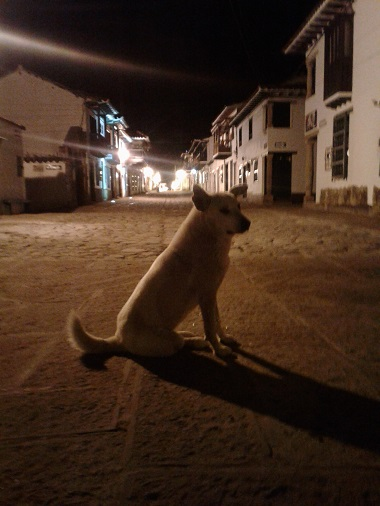
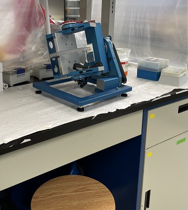

Hola! I'm Juan David
a molecular biologist from Colombia
I'm interested to learn, teach and research about biodiversity, evolution,
molecular biology, bioinformatics, space sciences and pathogens around the world.
About Me
 Juan David Carvajal Agudelo
Juan David Carvajal Agudelo
I am a biologist from Manizales, Caldas, Colombia, and I work in the field
of molecular biology techniques to research and discover facts about biodiversity,
and neotropic pathogens and diseases. I am also very interested and working in space sciences,
which is turning into my passion, where I'm involved into astrobiology and the research about
how biological systems responds to gravity changes and vibration and how we could tackle them.
You can find me as Juan D. Carvajal-Agudelo in research purposes, and as @biodavi in all social media.
I'm currently working as a researcher in Mount Saint Vincent University, Halifax, Canada in the bone development lab of Dr. Franz-Odendaal.
Education
Bachelor of Science – Biology
Universidad de Caldas, Colombia | 2018
Participation in Research Project: Expression of the HER2, MUC1 and ER-α genes and their significance in the early diagnosis of canine breast cancer in Manizales, Caldas.
Master in Biological Sciences
Universidad de Caldas, Colombia | 2022
Thesis: Bacterial microbiome of Ornithodoros cf. hasei (acari: argasidae) and wild mammals in Arauca - Colombian Orinoquia.
Exchange student at Mount Allison University, Sackville, NB, Canada, 2021
Professional Experience
Bone Development Lab – Mount Saint Vincent University, Halifax, NS, Canada.
February 2022 – Current.
Activities/Responsibilities:
- Laboratory support with the Aquatic Facility of MSVU, specilized in zebrafish. - https://www.bonedevelopmentlab.ca/people/
Molecular Analyst for the detection of SARS-CoV-2
Biology Molecular Laboratory- Diagnostics of COVID19 – Dirección Territorial de Salud de Caldas, Colombia Goverment and Universidad de Caldas, Colombia
July 2020 to December, 2020 / June 2021 to December, 2021.
Activities/Responsibilities:
- Carry out the correct reception, handling, preparation, processing, conservation, and storage of the samples that enter to the molecular biology laboratory, in accordance with the guidelines and procedures established in the Quality Management System for the work areas. This includes attending technical meetings and having permanent availability during the contingency and health emergency period, 7 days a week.
Research Assistant
Genetics Laboratory, Universidad de Caldas, Colombia
March, 2019 to March, 2021
Activities/Responsibilities:
- Coordinate activities in the molecular and cellular biology laboratory.
- Processing of samples for the detection of pathogens in biological samples, as well as preparation for sequencing using molecular markers.
- Collection and analysis of laboratory information related to molecular markers, quality controls, sequencing, and results of molecular detection.
- Preparation of reports and writing of research articles and result reports.
- Support activities at the Museum of Natural History, specimen preparation, taxidermy, collection of morphometric information and species identification (mammalogy area).
- Bioinformatics data analysis related to quality controls in DNA extraction, metagenomic sequencing and descriptive data analysis for 16S.
Secundary work-research experience
Research Intership
Mount Allison University, Sackville, NB, Canada
Feb. 2021 - Jun. 2021
Activities/Responsibilities:
- Lloyd’s Lab https://www.lloydticklab.ca
- Internship focused on the description of Borrelia sp genotypes based on DNA multilocus methodologies.
- Exchange student and research internship funded by Global Affairs Canada - Emerging Leader in the Americas Program. https://www.lloydticklab.ca/previous-students.html
Biology Tutor Expert
NextLearning online platform at Chegg Company.
April 2020 to July 2020
Activities/Responsibilities:
- Problem solving and teaching in the field of biological sciences.
Cellular and Molecular Biology Laboratory Monitor as undergraduate student
Molecular biology laboratory, Universidad de Caldas, Colombia
February, 2017 to February, 2018
Activities/Responsibilities:
- Laboratory of instrumentation in molecular biology and microbiology.
- Electrophoresis, PCR, RT-qPCR, DNA-RNA extraction, histology, culture, microbiology, and microscopy techniques.
- Teaching assistant: evaluation and monitoring of undergraduate biology students
Further and complementary education
| Career development courses | Institution | Year |
|---|---|---|
| Analysis of Exomes in Cancer | Universidad del Valle | Cali, Valle del Cauca, Colombia | 2017 |
| Genetic Engineering and its Application to Microbial Biotechnology | Universidad Santiago de Cali | Cali, Valle del Cauca, Colombia | 2018 |
| Evolutionary Genomic Training at the Caribbean Cost of Colombia | Universidad de los Andes Sede Caribe, Cartagena, Colombia | 2019 |
| Mammal Parasitology: Field Methods | Universidad de Antioquia – University of Nebraska-Lincoln | Centro de Inv. LA PALMITA, Yopal, Casanare, Colombia | 2019 |
| COVID-19: Tackling The Novel Coronavirus | Future Learn - Online | 2020 |
| Genomic Technologies in Clinical Diagnostics: Molecular Techniques | Future Learn - Online | 2020 |
| Metagenomics applied to surveillance of pathogens and antimicrobial resistance | Coursera | 2020 |
| Whole genome sequencing of bacterial genomes tools and applications | Coursera | 2020 |
| Bacterial Genomes Program (5 Courses) | Future Learn - Online | 2020 |
| Bioinformatic Methods I, Bioinformatic Methods II | Coursera | 2020 |
| Finding Hiding Messages. Bioinformatics I, Genome Sequencing. Bioinformatics II, Comparing Genes, Proteins, and Genomes. Bioinformatics III | Coursera | 2020 |
| Introduction to Genomic Technologies | Coursera | 2020 |
| Bioconductor for Genomic Data Science | Coursera | 2020 |
| Biological Diversity (Theories, Measures and Data sampling techniques) | Coursera | 2020 |
| Geographic Information Systems (GIS) Specialization Program (5 courses) | Coursera | 2020 |
| Tropical Parasitology: Protozoans, Worms, Vectors and Human Diseases | Coursera | 2020 |
Awards
| Institution | Award | Year |
|---|---|---|
| Instituto Universitario de Caldas | Award to Perseverance | 2012 |
| Universidad de Caldas | Honour Academic Tuition | 2014 & 2016 |
| Bancolombia | Fellow of Bancolombia Foundation, Dreams of Peace Program | 2015 to 2018 |
| Universidad de Caldas | Leader of Research group for undergraduate students in Molecular Genetics | 2017 to 2018 |
| Ministery of Sciences Colombia and Universidad de Caldas | Master scholarship Ministery of Sciences Colombia and Universidad de Caldas | 2019 - 2021 |
| Global Affairs Canada | ELAP Scholarship (Emerging Leader in the Americas Program) -Canadian University Exchange – Mount Allison University | 2021 |
| Consejo Profesional de Biologia | Recognition for their participation in the management of the COVID-19 pandemic 2020 and 2021 | 2021 |
Volunteering
Volunteering and committee programs for personal, social, inclusive and academic development.
Curriculum representative for the Master's students program in Biological Sciences | 2020-2021.
Member of the research group on Genetics, Biodiversity and Ecosystem Management (GEBIOME) | Universidad de Caldas | 2017 - Present.
Member of the Research Group on Genomics and Conservation - The Colombian Orchid Society | 2020 - 2021.
Member of the Molecular Genetics Research group for undergraduate students (SeGeM) | 2017 - 2023.
Secretary - RSG Colombia committee, International Society for Computational Biology | Local chapter for the ISCB Student Council | 2021 – Present https://rsgcolombia.github.io/
Volunteer and Social Media Manager at SAVE Mexico Non profit organization in turtle conservation program in Akumal, Mexico - 2023.
Volunteer at Orquideas para la paz program - Colombia - General communication manager in The Arias Lab and related to the community work with orchids and posconflict relations and peace in rural areas or Antioquia, Colombia. https://theariaslab.github.io/volunteers.html
Projects
 Expression of the HER2, MUC1 and ER-α genes and their significance in the early diagnosis of canine breast cancer in Manizales, Caldas | 2017-2020
Role: Undergraduate Student. Funding: Research, Innovation and Creation Projects 2017, Office for Research and Postgraduate Studies, Universidad de Caldas.- To analyze epidemiological data regarding the prevalence of canine breast cancer.
- To analyze bioinformatic data regarding detection of SNPs in canine breast cancer.
- Perform RNA and RT-qPCR activities.
Peri-Urban Control Barriers: The role of wild mammals in the circulation of hemoparasites in the network of eco-parks of Manizales, Caldas | 2019 - 2020
Role: Co-researcher and graduate student.Funding: Research Projects, Research and Postgraduate Studies, Universidad de Caldas.
- Identification of pathogens in wild mammal blood.
- PCR and DNA sequencing detection and description of species through molecular techniques.
- Field activities in sampling of wild mammals.
- Community activities for the dissemination of acquired knowledge.
The role of birds and small wild mammals in the circulation of ticks and Rickettsia in the department of Arauca (Colombian Orinoquia) | 2019 - 2021
Role: Research assistant and graduate student.Funding: Ministery of Science Colombia.
- Coordinate activities in the molecular and cellular biology laboratory.
- Collection and analysis of laboratory information.
- Preparation of reports and writing of research articles.
- Support in field activities based on sampling of wild mammals.
- Community activities for the dissemination of acquired knowledge.
Bachelor thesis tutor: Molecular and morphological characterization of Trypanosoma cruzi and Trypanosoma rangeli associated with wild mammals from Arauca, Colombia.
Co-supervisor. Biology Undergraduate Student | 2019 - 2021 | Universidad de Caldas.Student: Maria Paula Trujillo Betancur.
 Understanding microgravity-induced bone loss through in vivo simulated microgravity experiments | 2022-2023
Role: Research assistantFunding: Canadian Space Agency.
- Analysis of stadistic data.
- Coordinate activities in the molecular laboratory including gene expression and PCR set up.
- Cultivate scales and take care of zebrafish systems.
Deciphering simulated microgravity and vibration effects in bone tissue in vivo| 2023-2024
Role: Research assistantFunding: Canadian Space Agency.
- Analysis of stadistic data.
- Coordinate activities in the molecular laboratory including gene expression and qPCR set up.
- This study aims to tease apart the cellular interactions and communications affected by microgravity and its countermeasure, vibration, using larval and adult zebrafish in vivo and in vitro.
Publications
| New records and confirmation of the presence of three species of primates (Mammalia, Primates) in southwestern Colombia. (2020) Héctor E. Ramírez-Chaves, Juan D. Carvajal-Agudelo, Manuel Hoyos R., Sebastián Bustamante-Manrique, Alejandra Castaño-Rivera, Maria Alejandra Rivillas-Carmona, Paula A. Ossa-López, Fredy A. Rivera-Páez. Check List 16 (4): 831–839. https://doi.org/10.15560/16.4.811 | 2020 |
| Detection of single nucleotide polymorphisms (SNPs) in HER2, MUC1, ESR1, and BRCA1 genes associated with canine mammary cancer. J. D. Carvajal-Agudelo, L. Giraldo-Chalarca, D. M. Cortes-Mera, P. A. Ossa-López, E. D. Morales-Álvarez and F. A. Rivera-Páez. Veterinarska Stanica. 52 (5). https://doi.org/10.46419/vs.52.5.1 | 2021 |
| Ticks (Acari: Ixodoidea) associated with mammals in Colombia: a historical review, molecular species confirmation, and establishment of new relationships. Ortíz-Giraldo, M., Tobón-Escobar, W. D., Velásquez-Guarín, D., Usma-Marín, M. F., Ossa-López, P. A., Ramírez-Chaves, H. E., Carvajal-Agudelo., J. D & Rivera-Páez, F. A. Parasitology Research, 1-12. https://doi.org/10.1007/s00436-020-06989-6 | 2021 |
| Field blood preservation and DNA extraction from wild mammals: methods and key factors for biodiversity studies. Carvajal-Agudelo, J. D., Trujillo-Betancur, M. P., Velásquez-Guarín, D., Ramírez-Chaves, H. E., Pérez-Cárdenas, J. E., & Rivera-Páez, F. A. Revista UDCA Actualidad & Divulgación Científica, 24(1). https://doi.org/10.31910/rudca.v24.n1.2021.1766 | 2021 |
| Two new feather mites of the genus Trochilodectes Park & Atyeo (Astigmata: Proctophyllodidae) from hummingbirds in Colombia (Apodiformes: Trochilidae). Hernandes, F. A., Castaño-Villa, G. J., Agudelo, J. D. C., & Rivera-Páez, F. A. Systematic and Applied Acarology, 1495-1507. https://doi.org/10.11158/saa.26.8.7 | 2021 |
| Evaluation of gamma-actin, beta-actin, GAPDH, and 18S as reference genes for qRT-PCR using blood samples in canine mammary research. J. D. Carvajal-Agudelo, D. M. Cores-Mera, L. Giraldo-Chalarca, E. D. Morales-Álvarez, P. A. Ossa-López, J. M. Perez-Zapata and Fredy A. Rivera-Páez. Veterinarska Stanica. 53(1). https://doi.org/10.46419/vs.53.1.5 | 2022 |
| Bacterial and related to tick-borne pathogen assemblages in Ornithodoros cf. hasei (Acari:Argasidae)and blood of the wild mammal hosts in the Orinoquia region, Colombia. Juan D. Carvajal‐Agudelo, Héctor E. Ramírez‐Chaves, Paula A. Ossa‐López & Fredy A. Rivera‐Páez. Experimental and Applied Acarology. https://doi.org/10.1007/s10493-022-00724-9 | 2022 |
| Morphological and molecular confirmation of Ornithodoros hasei (Schulze, 1935)(Acari: Argasidae) in Colombia. Paula A Ossa-López, Lorys Y Mancilla-Agrono, Lizeth Fernanda Banguero Micolta, Héctor E Ramírez-Chaves, Juan David Carvajal Agudelo, Sebastián Muñoz-Leal, Marcelo B Labruna, Vett Lloyd, Fredy A Rivera-Páez. Ticks and Tick-borne Diseases. https://doi.org/10.1016/j.ttbdis.2023.102142 | 2023 |
| Effects of simulated microgravity and vibration on osteoblast and osteoclast activity in cultured zebrafish scales. Carvajal-Agudelo, J. D., McNeil, A., & Franz-Odendaal, T. A. Life Sciences in Space Research, 38, 39-45. https://doi.org/10.1016/j.lssr.2023.05.002 | 2023 |
| Comparison of Effects of 2D and 3D Simulated Microgravity Rotation on Ossification in Larval Danio Rerio (Zebrafish). Eaton, J., Carvajal-Agudelo, J. D., & Franz-Odendaal, T. A. Microgravity Science and Technology, 35(5), 53. https://doi.org/10.1007/s12217-023-10077-6 | 2023 |
| Turn on the lights! Fundamental science leads to scientific progress: A perspective from developmental biology. Franz-Odendaal, T. A., Carvajal-Agudelo, J. D., Apienti, T. A. O., Drake, P. M., Eaton, J., McInnis, S., & Muntzar, R. Proceedings of the Nova Scotian Institute of Science (NSIS), 53(1), 5. https://ojs.library.dal.ca/nsis/article/view/11854 | 2023 |
Scientific Events
| V Regional Biology Symposium | Universidad Tecnológica de Pereira | " Genotoxic evaluation effect induced by phentoate in Poecilia reticulata (Cyprinodontiformes: Poeciliidae)" & "Microbial and macromycete ecology of the San Vicente de Cabal hot springs, Santa Rosa" | Santa Rosa de Cabal, Colombia - 2018 |
| XV Colombian Congress & IX International Human Genetics Congress | Universidad Simón Bolívar, Universidad Libre, Colombian Association in Human Genetics | "Epidemiological meta-analysis of clinical variables related to canine breast cancer" | Barranquilla, Colombia - 2018 |
| VIII Colombian Symposium of Virology and IV Latin American Congress of Virology | Universidad el Bosque | HIV mortality and tuberculosis coinfection in the department of Caldas, Colombia (2010 - 2018) | Bogota DC, Colombia - 2019 |
| XVII Colombian Congress of Parasitology and Tropical Medicine | Universidad ICESI | Comparative evaluation of methods of conservation and extraction of DNA in blood of wild mammals used in the study of hemoparasites | Cali, Colombia – 2019. |
| 9th Atlantic Regional Development Biology Symposium | Does exposure to simulated microgravity and vibration affect bone cells in an in-vivo zebrafish cultured scale system | Mount Saint Vincent University | Halifax, Sept 2022. |
| Queer Atlantic Canadian STEM (QAtCanSTEM) |Effects of simulated micro-gravity and vibration on osteoblast and osteoclast activity in cultured zebrafish scales | Mount Saint Vincent University | Halifax, Oct, 2022. |
| American Association for Anatomy Annual meeting| Spatial and Temporal Patterning of the Tracheal Cartilage | Co-author -Washington DC, March 24-28 2023. |
Contact
Feel free to contact me through my email jdavidcarvajal@gmail.com.